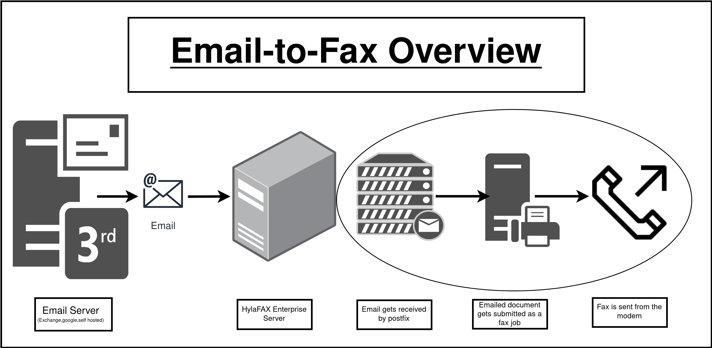

Sending Faxes
sendfax
HylaFAX includes a command line program called sendfax for sending faxes. Typical usage would be something like:
$ sendfax -f "myname@mydomain.com" -R -r "faxsubject" -c "coverpage comments" -x "Recipient’s
company" -d "Recipient@1234567" tofax.pdf
where myname@mydomain.com is a valid e-mail address for the sender, 1234567 is the number where to fax, and tofax.pdf is the image file to be faxed. Standard HylaFAX-compatible file formats are ASCII, TIFF, PostScript, and PDF.
Be aware that sendfax is capable of handling multiple -d options and that only the options that precede it apply to that instance of the -d. In most cases the -d option is the last option that should be used. See the sendfax manpage for more information.
man sendfax
sendfax options:
Priorities
-P
Ex: sendfax -P 63 ...
Priority Assign the specified scheduling priority to subsequent jobs. A priority is an integer value in the range [0-255]. Lower values result in higher priority processing.
By default, each job is assigned 127 for an initial scheduling priority. If a job’s priority is greater than bulk faxes then the job’s priority is raised (numerically lowered) for each failed attempt to transmit so that retransmit attempts are done ahead of newly submitted jobs. In the case of bulk faxes (numerically higher than 190), then the job’s priority is lowered (numerically raised) for each failed attempt to transmit so that the whole of the bulk-queued jobs will be attempted before any are retried.
The priority may also be specified as one of the following symbolic names: default or normal (127), bulk or junk (191), low (190), or high (63).
Compression
-1
Ex: sendfax -1 ...
Transmit facsimile documents using 1-D MH compression. By default HylaFAX will use the optimal compression scheme supported by the transmitting modem and receiving facsimile device.
-2
Ex: sendfax -2 ...
Transmit facsimile documents using 2-D MR compression, if possible. By default HylaFAX will use the optimal compression scheme supported by the transmitting modem and receiving facsimile device.
-3
Ex: sendfax -3 ...
Transmit facsimile documents using 2-D MMR compression, if possible. By default HylaFAX will use the optimal compression scheme supported by the transmitting modem and receiving facsimile device.
Speed
-b speed
Ex: sendfax -b 14400 ...
Transmit facsimile documents using a signalling rate that is constrained to be at least speed bits/second. If the specified speed is greater than the transmitting modem or receiver is capable of, it is reduced to the highest possible speed both devices support. If a negotiated signalling rate greater than or equal to speed cannot be negotiated then the job is aborted. Possible speeds are: 2400, 4800, 7200, 9600, 12000, 14400, 16800, 19200, 21600, 24000, 26400, 28800, 31200, and 33600. By default Hyla FAX will use the fastest possible rate supported by the transmitting modem and receiving facsimile device.
-B speed
Ex: sendfax -B 2400 ...
Try to transmit facsimile documents using the desired signalling rate. Possible speeds are: 2400, 4800, 7200, 9600, 12000, 14400, 16800, 19200, 21600, 24000, 26400, 28800, 31200, and 33600. If the specified speed is greater than the transmitting modem or receiver is capable of, it is reduced to the highest possible speed both devices support. By default Hyla FAX will use the fastest possible rate supported by the transmitting modem and receiving facsimile device (unless restricted by other server configuration); this option can be used to reduce the speed. Note that international calls are frequently more reliable when transmissions are restricted to 9600 bits/second. For Class 1/1.0 devices, if the specified speed is not greater than 14400 then V.34 will not be attempted, and if the specified speed is 9600 or 7200 then V.29 will be assumed in lieu of V.17.
Caller ID /tsi
-S
Ex: sendfax -S 1234567890 ...
Pass tsi to the server as the suggested sender identification to be used, for example, in tagline imaging and fax protocol.
Use specific modem
-h modem@localhost
Ex: sendfax -h boston00@localhost ...
Tries and Max dials
- Create a page for deeper explination of both
-t tries
Ex: sendfax -t 6 ...
Make no more than tries attempts to send the facsimile. (A try is a call in which carrier is established and the facsimile protocol is commenced; this is contrasted with a call attempt that might have failed because the line was busy.) Without specifying a "tries" value to the server Hyla FAX will, with some exceptions, make an unlimited number of attempts to completely send the facsimile before the kill time expires. (The exceptions are that Hyla FAX will terminate a job if 3 consecutive attempts to send a particular page fail, or if it appears the receiver is not a facsimile machine.) Use ''-1'' to indicate that no tries value should be specified to the server.
-T maxdials
Ex: sendfax -T 4 ...
Make no more than maxdials calls in attempting to send the facsimile. By default, HylaFAX will redial 12 times before killing a job. Use ''-1'' to indicate that no maxdials value should be specified to the server.
Custom Client Applications
Should you desire to write your own client application for submitting faxes to HylaFAX, below are sample applications in .NET and Java: • .NET sample client http://people.ifax.com/~david/dotnetsample.zip • Java sample client http://people.ifax.com/~david/javasample.zip
Web Interface
- add link to web interface doc
Email-to-Fax
 Email to FAX is simply a matter of Postfix receiving an email and handing it off to the faxmail program. Postfix is the email server that receives the email, and faxmail is a program included with HylaFAX for processing email messages and submitting them to HylaFAX for faxing.
In the "Configuring Mail" area of the HylaFAX Enterprise Appliance console, you can set up Email to FAX support.
To configure Email to FAX support, enter the domain name that you intend to use into the “Fax Domain” field (ie. fax.example.com) and save your changes. Keep in mind that your mail server must be able to lookup the Fax Domain in your network's DNS in order to deliver emails to the HylaFAX Enterprise server.
Next, send the email by addressing the recipient using the "FAXNUMBER@fax.example.com" format where FAXNUMBER is the actual fax number. If the job was successfully added to the HylaFAX queue, you'll see it in the Outbox of web interface and in the output of "faxstat -s".
Email-to-Fax tweaks:
Increase postfix message size limit
To review the current maximum message size limit, run:
postconf message_size_limit
To increase the max message size limit, run:
postconf -e message_size_limit=20480000
postfix reload
Multiple Fax Domains
To set this up you will need to edit the postfix configration file main.cf located at /etc/postfix/. At the bottom of this file is the variable relay_domains. Add your new domains to that variable separated by a comma.
relay_domains= faxserver.example.com, faxserver.test.com, faxserver.ifax.com
In the file virtual_alias-fax located at /etc/postfix/ , add a line at the bottom for each new domain in this style (this would be to add "fax.newdomain.com" as an email-to-FAX domain:
/^([+]?[0-9*#.-]+)@fax\.newdomain\.com$/ $1@fax.localhost
Finally reload the postfix configuration:
postfix reload
Ignore Email Body
If you would like to ignore the email body of an Email to FAX message, execute the following command:
ln -s /bin/true /usr/sbin/faxmail/text/plain
That file tells faxmail to ignore "text/plain" email attachments, which is what the email body consists of. Simply delete /usr/sbin/faxmail/text/plain and faxmail will send the email body in addition to any other plain text files in the email to HylaFAX for faxing.
Disable Email Headers
Create /etc/hylafax/faxmail.conf with the following content to disable the email headers from appearing in the fax:
AutoCoverPage: false
TextPointSize: 12pt
Headers: clear
MailUser: faxmail
TrimText: yes
Disable Cover Pages
Create /etc/hylafax/faxmail.conf with the following content to disable the email headers from appearing in the fax:
AutoCoverPage: false
TextPointSize: 12pt
Headers: clear
MailUser: faxmail
TrimText: yes
Modem Control
Specifying Default Outbound Devices
You can use the ModemReadyState parameter in the /var/spool/hylafax/etc/config.bostonXX files to control whether or not the device is assigned to outbound jobs.
For example, if you want to dedicate boston00 to boston01 for receiving faxes only (thus allowing boston02-07 to both send and receive faxes), then you would add the following setting to files config.boston00 and config.boston01:
ModemReadyState: D
That would tell HylaFAX not to use boston00 and boston01 for outbound jobs. For details, please see the hylafax-config manpage.
Afterward, restart the affected btgettys so that they immediately reload their configuration:
faxquit boston00; faxquit boston01
-or-
for i in /var/spool/hylafax/FIFO.boston0[0-1]; do echo Q > $i; done
Modem Order
In /var/spool/hylafax/etc/config, you can use the “any” modem group to specify which modem devices to use. For example, to only use boston00 to boston07, use:
ModemGroup: “any:boston0[0-7]"
The field is a regular expression and can get as complicated as it needs to be. For example, to use boston00 through boston12, here's the regexp:
"any:boston(0[0-9]|1[0-2])"
No restarts are required to put this into effect.
Additionally, you can tell the system in which order to use the devices. You can specify a modem priority for each channel by editing the /var/spool/hylafax/etc/config.bostonXX files and adding the ModemPriority parameter, which sets the scheduling priority to use for a modem. Priority values are in the range 0 to 255 with lesser values signifying higher (more desirable) priority. The HylaFAX scheduler process assigns the highest priority modem that is ready for use when scheduling an outbound job. If multiple available modems in a job's selected ModemGroup have the same ModemPriority value, then the HylaFAX scheduler assigns jobs to them in a round-robin fashion.
For example, in config.boston22 add:
ModemPriority: 0
And in config.boston00 add:
ModemPriority: 23
And in files config.boston21 to config.boston01 complete the range of values. For example:
config.boston21: ModemPriority: 1 config.boston20: ModemPriority: 2 config.boston19: ModemPriority: 3 ... config.boston02: ModemPriority: 21 config.boston01: ModemPriority: 22
Afterwards, restart the btgetty's so that they immediately reload their configuration.
for i in /var/spool/hylafax/FIFO.boston0[0-1]; do echo Q > $i; done
Pausing Modems
Add the following to the bottom of /var/spool/hylafax/etc/config:
ModemGroup: "any:hold"
No restarts are required to put this into effect. (faxq rereads the etc/config file after receiving another event - such as a new job being created - so once the file is edited, no new jobs will be sent.)
When all channels are "Running and idle” then the queue is officially paused.
Then to un-pause the queue, comment out the ModemGroup line. At that point you can force faxq to reread the config file by running
echo Z > /var/spool/hylafax/FIFO